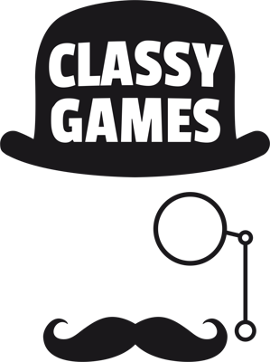
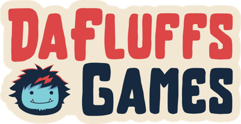
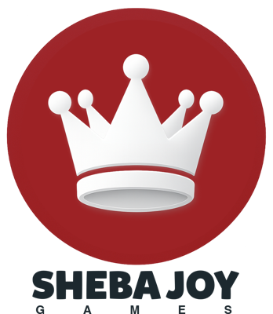

Which image catches your eye?
Want in early?
It's free, no spam.
For the players
Pick what catches your eye. Earn rewards.
See two images from upcoming games. Pick the one you like best. That's it.
- Earn XP for every pick
- Swap XP for gift cards
- See upcoming games first
- Connect with developers
Join as a player →
Hundreds of upcoming games are waiting for your pick.
For the developers
Know which Key Asset performs best
before spending on marketing.
Your Key Asset versions go head to head in front of players who play your genre. You see which one performs best, and why.
- Click-through rate (CTR)
- Head-to-head ranking
- Audience breakdown
- Genre benchmark
- Decision speed
No AI predictions. No subscriptions.
Every result comes from real players, matched to your genre.
Join as a developer →
Who is actually using Key Art Clarity



And hundreds more of publishers, PR agencies, studios and indies!
Join the waitlist
FAQ
For players
- Is it free?
- Yes. Joining and voting are free, always.
- How do I earn rewards?
- Every vote earns XP, and your multiplier grows the more you vote. Spend XP on gift cards, game keys and beta invites.
- What do I actually do?
- You see two Key Assets for upcoming games and pick the one that catches your eye. That's it.
- When can I start?
- Join the waitlist and we'll email you the moment your spot opens.
For developers
- Is this another SaaS subscription?
- No, and it never will be. Right now it's 100% free. In the future, testing a Key Asset will cost a small one-off fee. No subscription, ever.
- How does testing work?
- Upload your Key Asset versions. Players who like your genre pick between them, head to head, and you see which one wins.
- What results do I get?
- Click-through rate for each version, how sure we are, how fast players decide, which player groups it wins with, and where it ranks in your genre.
- Who are the players?
- Real players who signed up to vote, matched to your game's genre.
- Can I offer rewards to players?
- Yes. Game keys and beta invites from studios are some of our most popular rewards.